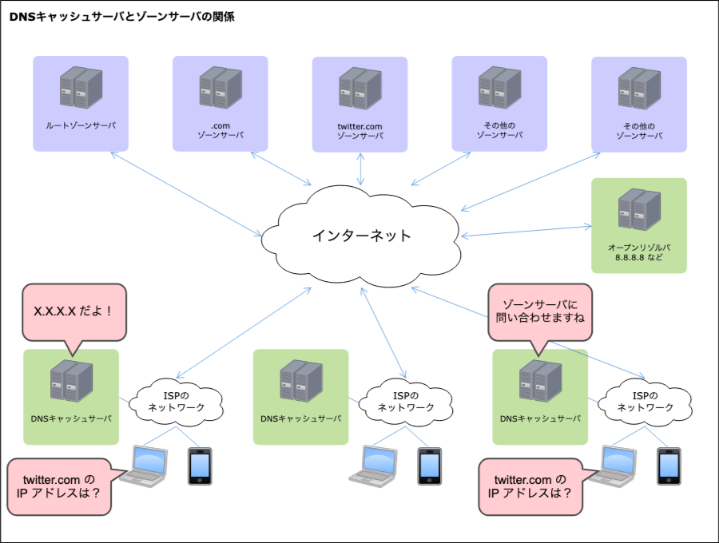

¶ 1章：導入
DNS (Domain Name System) 権威サーバの機能を提供するサービス事業者が、DNSの設定を変更してから反映されるまでに時間がかかることについて、次のような説明をしていることがあります。
世界中のDNSサーバへ情報が浸透するまで約1～3日程（※）かかります。
※DNSが浸透する期間はあくまでも目安です。どのぐらいの期間がかかるか特定は出来ません。
サービス事業者によってこのような説明が横行していることは、次の記事からも知ることができます。
- ホスティング業者によって「浸透」等が不適切に使われている例 - www.e-ontap.com
- DNS浸透言ってるところと言っていないところ【レンタルサーバ編】 - ohesotori.hateblo.jp
次に、一般利用者によって次のような発言がされることがあります。
DNSの設定を変更したけど、情報が浸透するまで24時間〜72時間くらい待たないといけないみたい。
Twitterで「DNS 浸透」とでも検索をすると似たようなツイートをいくつも見つけることができます。
これらの説明、発言には重大な問題が含まれています。どのような問題があるのかについて説明していきます。
¶ 2章：問題点
「浸透をお待ちください」や「浸透するまで待たないと」と言っている発言者の立場ごとに、いくつかの問題が存在しています。
¶ DNSサービス事業者が発言した場合
- 「DNSは浸透するもの、浸透待ちが起こるもの」という誤解を広めている。
- DNS設定を行う際の適切な手順についての説明を全くしていない。
- 適切な手順で設定を行えば待つ必要がないものについて、待つ必要があると誤った説明をしている。
- DNSサービス事業者としての責任を放棄している。誤った説明で一般利用者を騙している。
¶ Web制作事業者が発言した場合
- お客さんに必要のない「DNS設定」の時間待ちを発生させてしまっている。
- （誤った理解に基づいて）ブログ記事などを書くことで、「DNSは浸透するもの」という誤解を広めている。
- Web制作事業者として（プロとして）、本来有するべきDNSに対する基礎的な理解が足りていない。
¶ Webサイト運営者が発言した場合
- 「DNSの設定が反映されるまでアクセスしにくくなります」などと言って、サイト閲覧者に不便を強いてしまう。
- そのような誤ったアナウンスを行うことで、「DNSは浸透待ちが起こるもの」という誤解を広めてしまう。
- 「反映される」とは何を意味しているのか分かっていない。何を以て「反映完了」なのか説明できない。
¶ 一般利用者・個人が発言した場合
- 待つ必要がないものについて、何時間も待って無駄に過ごしてしまっている。
- 他人に「DNSは設定後に何時間か待つ必要がある」と誤った説明をしてしまう。
- DNS設定を行う際の適切な手順について、いつまで経っても覚えることができない。
立場は他にもあるかもしれませんが、少なくとも上記のような問題があるのです。
「浸透」という言葉（表現）自体が問題だという意味ではないことに注意してください。そうではなく、そもそも適切な手順で設定すれば待つ必要がないものについて、誤った手順で設定した上に、その言い訳として「浸透待ち」などと言っていることが問題なのです。
「設定が変更されるのを待っている」、「反映されるのを待っている」などと言い換えても同じことです。浸透という言葉狩りではないことが理解できたのであれば次のステップに進みましょう。
¶ 3章：浸透待ちの正体
「DNS設定後は待つ必要がある」と誤解されるようになったことには何かしらの理由があります。その理由を説明します。
¶ DNSレコードの設定後になぜすぐ反映されないのか
DNS は「DNSキャッシュサーバ（フルリゾルバとも）」と「権威DNSサーバ（ゾーンサーバとも）」の2種類のサーバによって機能しています。
- 「DNSキャッシュサーバ」は、問い合わせを仲介する役目です。負荷分散のために存在しています。
- 「権威DNSサーバ（ゾーンサーバ）」は、DNSのリソースレコードが設定されているDNSサーバです。DNSレコードを管理する場合は、このサーバにDNSの設定を保存します。

インターネットを利用するとき、クライアント端末（お使いのPCやスマートフォンなど）はISP経由でネットワークに繋がっています。そして、ISPは一般的に、ISPごとに「DNSキャッシュサーバ」を持っています。携帯キャリアを例に言えば、「Softbank回線とDocomo回線では、使われるDNSキャッシュサーバが異なる」というわけです。
実際のDNS問い合わせの例を考えてみましょう。Softbank回線を使っていて、twitter.com のIPアドレスを問い合わせたとします。このとき、SoftbankのISPのDNSキャッシュサーバがその問い合わせの応答を以前に行い、そのキャッシュを持っていたら、キャッシュサーバはゾーンサーバに問い合わせることなくキャッシュを応答します。
次にDocomo回線を使っていて、twitter.com のIPアドレスを問い合わせたとします。このとき、DocomoのISPのDNSキャッシュサーバが応答をキャッシュしていなかったら（あるいはキャッシュの期限が切れていたら）、キャッシュサーバはゾーンサーバに問い合わせを行います。そして得られた結果をキャッシュしつつ、クライアント端末に応答します。
キャッシュが使われるかどうかは、DNSキャッシュサーバにキャッシュが存在するかどうかに依ります。キャッシュが存在する間は、権威DNSサーバを書き換えても、クライアント端末には書き換え前の古い情報が応答されてしまうのです。
キャッシュによって古い応答が返される時間が存在すること、これが「DNSレコードの設定後に、それがすぐ反映されない」理由です。
キャッシュは生存期間（TTL）が設定されているため、時間が経つと失効され、キャッシュサーバがゾーンサーバに問い合わせるようになり、新しい情報がクライアント端末に返されるようになります。この状況を、DNSレコードを設定したDNS権威サーバからどこかに情報が伝播されていく、浸透していくものだと勘違いして「浸透待ち」と呼んでしまっているのです。これが浸透待ちの正体です。
DNSの世界には「DNSキャッシュサーバ」というフォワードキャッシュ（クライアントサイドのキャッシュ）が存在する、ということを理解したら次のステップへ進みましょう。
¶ 4章：DNSレコードの変更を即時反映するには
適切な手順でDNSの設定を行えば、何時間も待つことなくDNSの設定変更を完了させることができます。ここではその手順について説明します。ポイントはTTLの事前調整です。
DNSレコードの変更には、大きく2つの変更があります。
- (1) NS以外のレコードの変更（Aレコードなどの変更）
- (2) NSレコードの変更（ネームサーバの移転）
NSレコードの場合、TTLの事前調整ができない範囲があるため対策が異なります。その点も含めて、次のケースで適切な変更手順を見ていきましょう。
- Webサイトを移転するため、Aレコードを変更したい
- 権威DNSサーバ（ネームサーバ）もWebサイトのAレコードも両方移転したい
¶ 4-1章：Webサイトを移転するため、Aレコードを変更したい
よくある例ですね。浸透を待つ羽目になる手順と、即時反映に成功する手順を示します。
移転前のDNSレコードの設定は次の通りだとします。そして、今日が12月1日で、12月25日の0時に移転したいとします。
| Host | RR Type | Value | TTL |
|---|---|---|---|
| www | A | 198.51.100.1 | 3600 |
移転後のIPアドレスは、203.0.113.1 だとします。
¶ 4-1-1章：浸透を待つ羽目になる手順
Aレコードの値を 203.0.113.1 に変更して、12月25日0時ちょうどに保存します。
そしてあなたは言うのです。「DNSレコードを変更したのでアクセスが不安定になるかもしれません」と。
この手順では、12月24日23時59分にアクセスがあり、そのタイミングでキャッシュが生成された場合、25日0時59分まで古いキャッシュが使われてしまいます。その間、そのDNSキャッシュサーバを利用するクライアント端末では、新しいサイトが見られずに古いサイトへアクセスさせられることになります。
¶ 4-1-2章：即時反映に成功する手順
反映したい日時（25日0時）から、現在のTTLだけ早い日時（24日23時0分）よりも前に、AレコードのTTLを短くします。
「12月24日の22時50分」でもよいですし、「12月23日」でもよいですし、「12月1日」にやってしまってもよいでしょう。TTLには 0 を指定することはできない場合があるので、小さな値、例えば 10 や 60 あたりを設定するようにしましょう。
その状態のまま、Aレコードの値を 203.0.113.1 に変更して、12月25日0時ちょうどに保存します。
この手順では、12月24日23時59分59秒にアクセスがあり、そのタイミングでキャッシュが生成された場合であっても、25日0時1分には古いキャッシュが失効するため、クライアント端末は新しいサイトをすぐに見られるようになります。
【注記】即時反映とは言っても、1分弱の誤差は生じてしまいます。しかし、その間の時間を「浸透待ち」と呼ぶ人はいないでしょう。
期待通り設定が変更できたことを確認できたら、必要に応じてTTLの値を 3600 に変更して保存します。
余談ですが、TTLをずっと短い値に設定しておけばいいじゃないかと考えることもできます。そうすればこのケースでは浸透待ちとは無縁になれそうです。実際、普段からAレコードのTTLを 60 に設定しているゾーンサーバが存在しています。そして、その行為に問題があると言われているわけでもありません。どう考えるかはあなた次第ですが、普段から短いTTLを使い続けるのも選択肢の一つです。
¶ 4-2章：権威DNSサーバ（ネームサーバ）もWebサイトのAレコードも両方移転したい
24時間待っても反映されないことになり得るのがこのケースです。以下ではレジストリのNS設定と、移転前と、移転後のネームサーバが登場します。そして、今日が12月1日で、12月25日の0時に移転したいとします。
自身が管理するドメイン名は debiru.net だとします。
| Host | RR Type | Value | TTL |
|---|---|---|---|
| debiru.net. | NS | ns.example.com | 172800 |
| Host | RR Type | Value | TTL |
|---|---|---|---|
| www | A | 198.51.100.1 | 3600 |
| @ | NS | ns.example.com | 86400 |
| Host | RR Type | Value | TTL |
|---|---|---|---|
| (empty) | |||
- 移転後のネームサーバは、
ns.example.jpだとします。 - 移転後のAレコードのIPアドレスは、
203.0.113.1だとします。
¶ 4-2-1章：浸透を待つ羽目になる手順（その壱）
最悪の手順は、12月25日0時の少し前から作業を始めて、次のような状態にすることです。
| Host | RR Type | Value | TTL |
|---|---|---|---|
| debiru.net. | NS | ns.example.jp | 172800 |
| Host | RR Type | Value | TTL |
|---|---|---|---|
| www | A | 198.51.100.1 | 3600 |
| @ | NS | ns.example.com | 86400 |
| Host | RR Type | Value | TTL |
|---|---|---|---|
| www | A | 203.0.113.1 | 3600 |
| @ | NS | ns.example.jp | 86400 |
この手順では、Aレコードだけを変更する場合と同様の「浸透待ち」が生じます。最悪で172800秒（2日間）も古いキャッシュが使われてしまうでしょう。
¶ 4-2-2章：浸透を待つ羽目になる手順（その弐）
次の手順は、Aレコードだけの変更と同様に対策をした手順ですが、どうなるでしょう。
12月1日に作業してみましょう。移転前のゾーンサーバのAとNSのTTLを 60 にしておきます。
| Host | RR Type | Value | TTL |
|---|---|---|---|
| debiru.net. | NS | ns.example.com | 172800 |
| Host | RR Type | Value | TTL |
|---|---|---|---|
| www | A | 198.51.100.1 | 60 |
| @ | NS | ns.example.com | 60 |
| Host | RR Type | Value | TTL |
|---|---|---|---|
| (empty) | |||
そして、12月25日0時の少し前に作業を始めて、次の状態にします。
| Host | RR Type | Value | TTL |
|---|---|---|---|
| debiru.net. | NS | ns.example.jp | 172800 |
| Host | RR Type | Value | TTL |
|---|---|---|---|
| www | A | 198.51.100.1 | 60 |
| @ | NS | ns.example.com | 60 |
| Host | RR Type | Value | TTL |
|---|---|---|---|
| www | A | 203.0.113.1 | 60 |
| @ | NS | ns.example.jp | 60 |
うまく工夫したように見えますが、実はこの手順では「浸透待ち」が生じることが知られています。レジストリのTTLが変更できていないことに注目してください（そして、それは変更することができません！）。
この手順でも、前の手順と同様に、最悪で172800秒（2日間）も古いキャッシュが使われてしまうでしょう。
¶ 4-2-3章：即時反映に成功する手順
12月1日に作業してみましょう。遅くとも1週間前くらいに作業してしまったほうがよいでしょう。
まず、移転後の権威DNSサーバに、移転前の情報を書き込みます。そして、ネームサーバだけ移転してしまいます。ついでに、AレコードのTTLを 60 に事前に短くしておきましょう。さらに、移転前のネームサーバのNSレコードを、移転後のネームサーバに書き換えておきます。
| Host | RR Type | Value | TTL |
|---|---|---|---|
| debiru.net. | NS | ns.example.jp | 172800 |
| Host | RR Type | Value | TTL |
|---|---|---|---|
| www | A | 198.51.100.1 | 60 |
| @ | NS | ns.example.jp | 86400 |
| Host | RR Type | Value | TTL |
|---|---|---|---|
| www | A | 198.51.100.1 | 60 |
| @ | NS | ns.example.jp | 86400 |
そして、12月25日0時の少し前に作業を始めて、次の状態にします。
| Host | RR Type | Value | TTL |
|---|---|---|---|
| debiru.net. | NS | ns.example.jp | 172800 |
| Host | RR Type | Value | TTL |
|---|---|---|---|
| www | A | 198.51.100.1 | 60 |
| @ | NS | ns.example.jp | 86400 |
| Host | RR Type | Value | TTL |
|---|---|---|---|
| www | A | 203.0.113.1 | 60 |
| @ | NS | ns.example.jp | 86400 |
成功の秘訣は、NS移転とA移転を別々に行うことがポイントです。NS移転だけ先に行ってしまうことで、課題を「Aレコードだけ変更する」状態に帰着させています。
移転前のネームサーバには、（12月1日に作業したのであれば）12月3日の同時刻以降にはもはや問い合わせは来ないはずなので、25日の移転時にレコードを編集する必要はありません（移転前のネームサーバをクローズしてしまっても良いでしょう）。
この手順であれば、高々1分待つだけで、DNS設定の変更を反映させることができます。
「移転後のネームサーバを使えるのが12月24日からだ」といったケースがあるかもしれませんが、それは事前準備不足です。DNSの仕組みを理解していれば、（.net/.comドメイン名の場合）遅くとも12月22日（移転の3日前）から移転後のネームサーバが利用できないと手遅れであることに気付くでしょう。
¶ 4章まとめ
長くなりましたが、「4章：DNSレコードの変更を即時反映するには」のまとめは次の通りです。
- Aレコードなどの変更時には、TTLの事前調整をする。
- NS移転とA移転（など）を同時に行わない。
この手順を覚えることができれば、二度と「浸透待ち」に悩まされることはなくなるはずです。